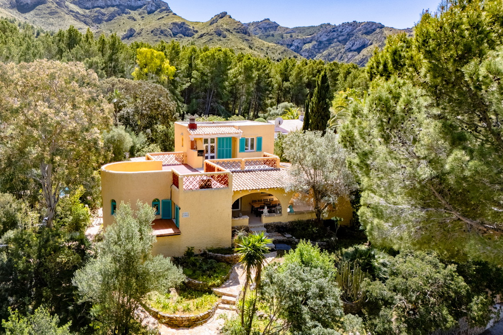

€895.000
Betlem near Colònia de Sant Pere (Artà), Mallorca
Open the listingEast-island old-and-new brief met: 1966 house extensively renovated 2022–2024 while keeping Mallorcan character (ochre stucco, turquoise shutters, arched porch, terracotta roof) plus open kitchen island, underfloor heating, PV and private pool on a quiet Betlem hillside. €895k is a bargain vs board betlem (W-049O84) at €1.195M in the same hamlet.
Opened 3 Sep 2026. Offer 895000 EUR; schema.org InStock; hasPool true. Construction year 1966; last restoration 2024. ~241 m² / 1,200 m²; optional adjacent plots mentioned on expose. Distinct from board betlem W-049O84 (different photo set, plot and price). Not on prior board.